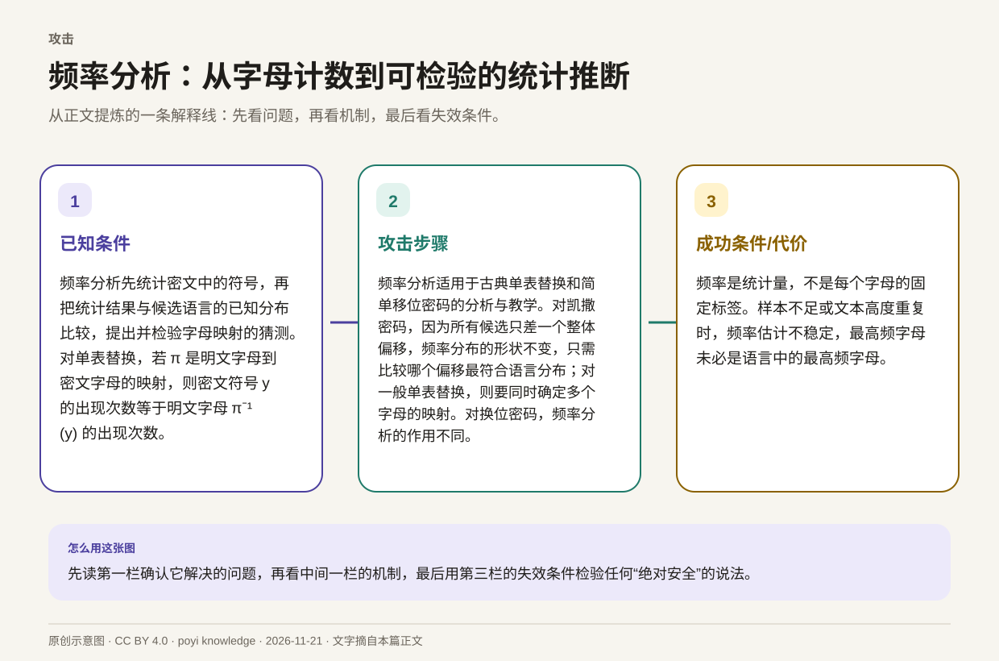
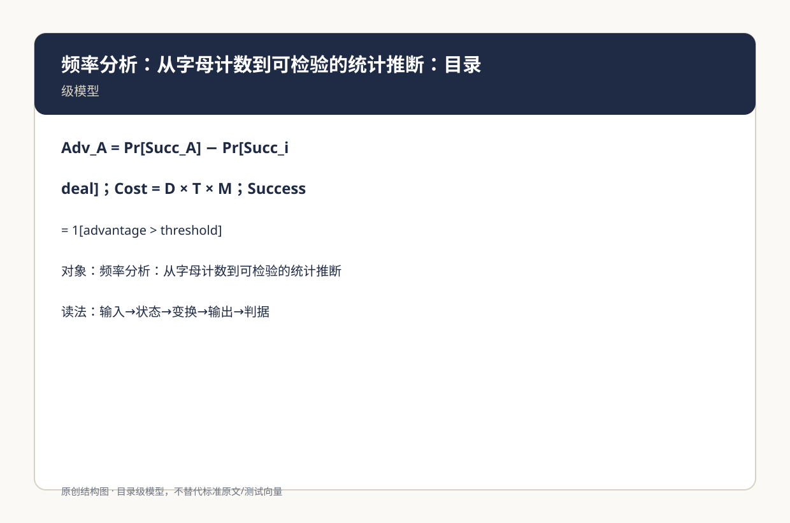

原理与机制
攻击：频率分析（Frequency Analysis）。频率分析先统计密文中的符号，再把统计结果与候选语言的已知分布比较，提出并检验字母映射的猜测。对单表替换，若 π 是明文字母到密文字母的映射，则密文符号 y 的出现次数等于明文字母 π⁻¹(y) 的出现次数。也就是说，映射只是给每个字母的出现次数换了标签，并没有改变次数的多重集。最基本的统计量是频数与相对频率。频数 f_i 是符号 i 在样本中出现的次数，样本总长度为 L 时，相对频率是 f_i/L。单字母统计看每个符号；双字母和三字母统计看相邻组合，例如英文中的 TH、HE、ER、IN、AN。组合统计能提供比单字母更多的结构信息，但样本必须足够长，且预处理规则必须一致。对于长度 L 的文本，索引重合度（index of coincidence, IC）定义为
IC = Σ f_i(f_i − 1) / (L(L − 1))。它估计从文本中随机取两个字母，它们相同的概率。对 26 个等概率字母，理论值是 1/26≈0.03846；对自然英文，HAC 给出的估计值约为 0.0667。IC 不需要知道具体映射，因此可以先用来判断文本更像单表替换、多表替换还是随机文本。卡方拟合优度统计量用于比较观测频数与期望频数：
χ² = Σ (O_i − E_i)² / E_i，
其中 O_i 是观测次数，E_i = L·p_i 是按候选语言频率 p_i 计算的期望次数。对 26 个字母、期望分布由外部表固定且没有从样本估计参数时，自由度是 26−1=25。卡方值越小，观测分布与期望分布越接近。把 26 个凯撒移位分别解密并计算 χ²，取最小者，是一种常见的自动化候选排序方法。但 χ² 不是频率分析的全部，也不是一条自动给出正确答案的定律。它依赖字母独立性、样本长度、语言和预处理等假设；它比较的是整体分布，不直接验证双字母、词形和语义。把 χ² 当作整个方法的同义词，会掩盖这些条件。一个可操作的工作顺序是：明确计数单位和预处理；统计单字母、重复字母、双字母和三字母；对照候选语言的频率表提出映射假设；把假设放回整段文本，检查词形、语境和自洽性；必要时用多个统计量交叉检验。每一步都可能产生多个候选，而不是一个唯一答案。

为什么重要
自然语言有冗余：字母、组合和词的出现并不均匀。单表替换保留这种不均匀性，只是换了符号名称。频率分析利用的正是密文仍然携带语言统计结构这一点，而不是某个密钥的代数弱点。它把密钥空间很大和结构被隐藏区分开。一般单表替换有 26!种可能，远大于凯撒密码的 26 种；但攻击者不必枚举 26!，因为语言统计可以把大量无意义候选排除。这个思路后来发展为更一般的统计密码分析：先找不变量，再缩小候选空间。频率分析也是统计推断的教学入口：先观察，提出假设，再用更多证据检验，而不是看到最高的柱形就宣布答案。它同时提醒读者，密码设计者可以通过改变统计结构来对抗分析，例如使用多表替换、同音替换或更大的分组。
应用与实例
频率分析适用于古典单表替换和简单移位密码的分析与教学。对凯撒密码，因为所有候选只差一个整体偏移，频率分布的形状不变，只需比较哪个偏移最符合语言分布；对一般单表替换，则要同时确定多个字母的映射。对换位密码，频率分析的作用不同。换位改变字母位置，不改变每个字母身份的总次数，因此单字母频率仍然保留；这可以帮助识别文本的语言和性质，但单凭计数不能恢复排列。HAC 把这一点作为识别简单换位的依据之一。对多表替换，同一个明文字母在不同位置可能变成不同密文字母，单字母频率被 摊平。这时直接对照单字母表通常失效，需要先估计周期，再按周期分列。Kasiski 方法和 IC 自相关是两条独立但相关的路线；它们不是频率分析的同义词，而是处理多表结构的不同工具。本文在示例中演示：对一个周期为 5 的维吉尼亚密文，整体 IC 接近随机值，而按 5 列拆开后每一列的 IC 又接近英文。对现代分组密码，频率分析不能被直接套用。分组长度很大时，统计所有可能的分组单元不可行；HAC 在讨论分组大小时明确把这一点作为阻止简单统计分析的条件之一。现代密码的安全性论证和攻击模型也比古典单表分析复杂得多。

边界与攻击面
频率是统计量，不是每个字母的固定标签。样本不足或文本高度重复时，频率估计不稳定，最高频字母未必是语言中的最高频字母。一个 15 字母的 ZEBRAZEBRAZEBRA 中，Z、E、B、R、A 各出现 3 次，IC 高达 0.1429，明显高于英文的 0.0667；这不是因为文本更像英文，而是因为重复模式太强。用卡方对这段文本做凯撒移位排序时，正确密钥甚至可能排在很后面。本文的计算示例会展示这种失败。### 文本题材或语言不匹配
频率表来自特定语言和语料。技术文本、人名列表、缩写、代码、混合语言或经过特殊预处理的文本，分布可能偏离通用频率表。语言选错，整张表的比较就失去意义。即使是英文，不同年代和体裁的字母分布也有差异；HAC 的 Figure 7.5 明确标注其估计来自 1964 年英文文本。### 映射不是单表
同音替换用多个符号表示同一个高频字母，刻意把分布压平；多表替换让同一字母在不同位置使用不同映射；两者都会破坏一个密文符号固定对应一个明文字母的前提。HAC 指出同音替换会增加分析难度，但足够长的密文仍可能结合其他统计性质；它不是绝对免疫。### 预处理会改变计数
是否转为大写、是否保留空格、是否删除标点、是否把重音字母折叠，都会改变频数和样本长度。两个看起来相同的「letter frequencies」（字母频率）可能来自不同预处理。报告结果时必须说明规则，否则数字不可比。### 卡方不是唯一判据
卡方只比较整体分布。两个不同的移位可能给出相近的 χ²；短文本可能让错误候选胜出；文本的真实分布也可能与期望表有系统偏差。把最小 χ² 直接当成已破解是过度推断。正确做法是把 χ² 作为候选排序，再用词形、双字母、语境和已知明文交叉验证。对 AES、RSA 等现代构造，不能因为频率分析在古典密码上有效，就宣称它能直接破译。现代分组密码的分组空间、轮函数和密钥规模都不同；HAC 对大分组阻止统计分析的说明正是这个边界的一部分。频率分析在侧信道、流量分析或统计测试中可能有类比，但那些是不同攻击模型，不能混为一谈。
历史与背景
al-Kindi（约 9 世纪）的 Risāla fī Istikhrāj al-muʿammā 通常被视为现存最早的密码分析专著之一（本批所查综述把它印作「Risalah fi Istikhraj al Mu'amma」）。本文所查阅的阿拉伯密码学历史综述称，al-Kindi 用一篇 3667 字母的文本统计阿拉伯语字母频率，随后提出后来被称为频率分析的方法。该综述还提到 KACST/KFCRI 2003 年出版的《Arabic Origins of Cryptology》第一卷是对该专著的整理与研究。本文把这部分写成据该综述介绍，因为本轮直接阅读的是综述和引用信息，而不是手稿原件。HAC 的脚注把现代密码分析术语和 IC 的部分历史归到 Friedman：1920 年的 Riverbank Publication no.22 讨论用 IC 进行密码分析，Friedman 在 1920 年提出“cryptanalysis”一词。Kasiski 方法最初发表于 1863 年。HAC 第 7 章把这些方法放在古典密码的结构比较中，而不是把它们当成彼此等价的技术。这段历史说明，频率分析不是某一天突然完成的单点发明，而是多语言、多世纪的统计实践。本文只写来源能够支持的归属和年代；不把 最早、发明者 之类的优先权争论扩大成未经核证的断言。
逐步示例与核验
复算示例
对凯撒移位密文 WKH TXLFN EURZQ IRA MXPSV RYHU WKH ODCB GRJ 统计字母频率，E/T/A 最高；试移 3 位得到 THE QUICK BROWN FOX JUMPS OVER THE LAZY DOG。频率分析利用的是自然语言分布，不是密钥空间枚举。
参考出处
- Wikipedia search entry for 频率分析. https://zh.wikipedia.org/w/index.php?search=%E9%A2%91%E7%8E%87%E5%88%86%E6%9E%90
- Handbook of Applied Cryptography (Menezes, van Oorschot, Vanstone). https://www.cacr.math.uwaterloo.ca/hac/